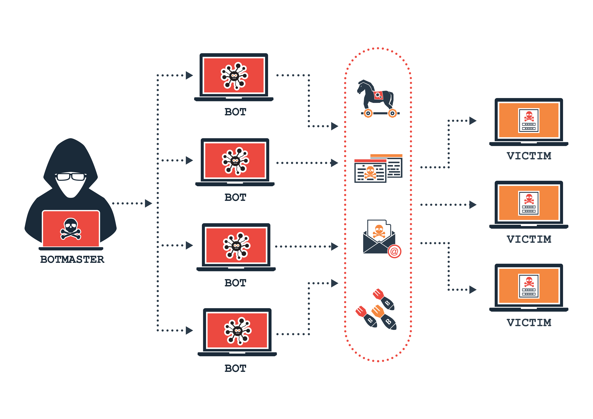

DDoS:
La Denegación de Servicio Distribuido, comúnmente conocida como DDoS por sus siglas en inglés (Distributed Denial of Service), representa una de las amenazas cibernéticas más disruptivas y desafiantes a la que se enfrentan tanto organizaciones como individuos. Este tipo de ataque tiene como objetivo abrumar un sistema o servicio en línea al inundarlo con un flujo masivo de tráfico, lo que provoca una caída o una degradación significativa en su disponibilidad y rendimiento.

Cómo Funciona un Ataque DDoS
En un ataque DDoS, un grupo de dispositivos o "botnets" comprometidos, que pueden incluir computadoras, servidores y dispositivos IoT (Internet de las cosas), son controlados por el atacante de manera remota. Estos dispositivos son utilizados para generar un flujo constante de tráfico hacia el objetivo del ataque, como un sitio web o un servicio en línea. La sobrecarga de tráfico resultante puede agotar los recursos del servidor objetivo, provocando una interrupción en la prestación de servicios y una negación de servicio a los usuarios legítimos.
Objetivos de un Ataque DDoS
- Sitios web y servicios en línea: Los atacantes pueden apuntar a sitios web comerciales, gubernamentales o de entretenimiento, así como a servicios en línea como plataformas de juego en línea y aplicaciones de mensajería.
- Infraestructura crítica: Las organizaciones y servicios clave, como hospitales, instituciones financieras y proveedores de servicios de utilidad pública, también pueden ser blanco de ataques DDoS.
- Competidores y enemigos: En algunos casos, los atacantes pueden utilizar ataques DDoS como herramienta para debilitar a competidores comerciales o socavar a adversarios políticos.
Consecuencias de un Ataque DDoS
- Interrupción de Servicios: Los servicios en línea pueden quedar inaccesibles durante el tiempo que dure el ataque.
- Pérdida de Ingresos: Las organizaciones pueden sufrir pérdidas financieras significativas debido a la caída de sus servicios.
- Daño a la Reputación: La incapacidad de proporcionar servicios puede dañar la reputación de una organización.
- Costos de Mitigación: La mitigación de ataques DDoS puede ser costosa, ya que requiere la inversión en medidas de seguridad y capacidad adicional de red.
Cómo Mitigar un Ataque DDoS
- Detección temprana: Utilizar sistemas de detección de DDoS para identificar y responder rápidamente a ataques.
- Redundancia de servidores: Tener múltiples servidores o ubicaciones geográficas puede ayudar a distribuir la carga y resistir mejor un ataque.
- Filtrado de tráfico: Implementar soluciones de filtrado de tráfico para bloquear el tráfico malicioso antes de que llegue al servidor.
- Proveedor de servicios de mitigación: Considerar la contratación de servicios de mitigación de DDoS proporcionados por proveedores especializados.